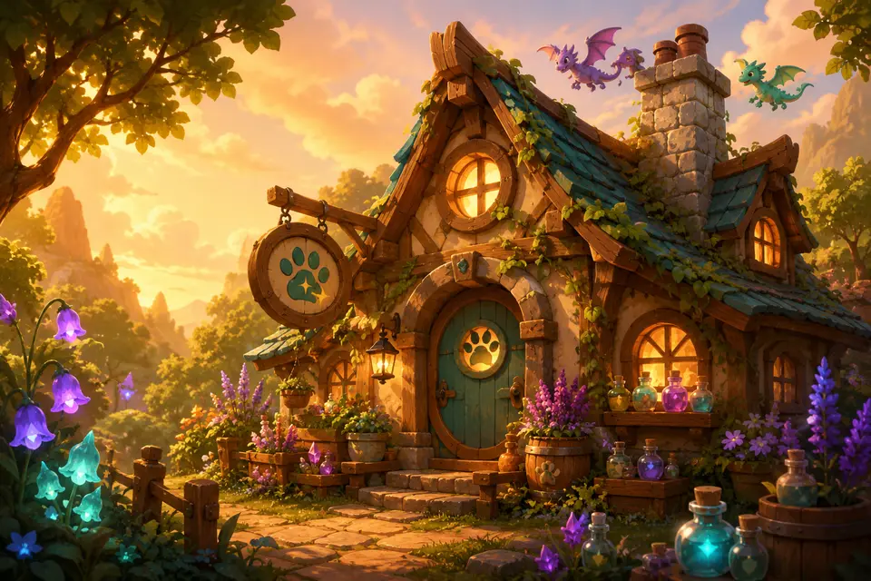

מרפאת הקסמים · front-end direction · 2026-07
Two keep the night (she reads at bedtime); two open the curtains. Warm on the left of each pair, cool on the right.
SWATCH ORDER — page · card · primary · teal · accent
שלום!
פרק 3

הדרקון שמאחורי הדלת
Maya opened the little green door. A tiny dragon was sleeping on a pile of blankets. His wing was hurt.
מה קרה לדרקון הקטן?
כל הכבוד!
Option 01 · dark
The rooftop from chapter-night, turned into a room: an indigo sky you can actually see into, with the lantern still burning.
| --color-bg | #241305 | → | #171033 | |
| --color-card | #3a1d08 | → | #221a44 | |
| --color-surface-2 | #4d2a0e | → | #2e2458 | |
| --color-nav | #2e1806 | → | #150e2c | |
| --color-ink | #fdf1d8 | → | #f7f0e2 | |
| --color-muted | #d9bc92 | → | #c3b7e6 | |
| --color-primary | #c39bf0 | → | #cba6ff | |
| --color-primary-ink | #2a1606 | → | #1a1038 | |
| --color-teal | #4ecec0 | → | #5fd8c6 | |
| --color-accent | #f5c563 | → | #ffc65c | |
| --color-danger | #ef9a7d | → | #ff9d8a | |
| --color-border | #a35d22 | → | #7d68b8 | |
| --color-bg-top | #361d08 | → | #241a4a | |
| --color-bg-glow-violet | #321f1a | → | #2e1e52 | |
| --color-bg-glow-teal | #282416 | → | #152c46 | |
| --color-bg-glow-amber | #331f0c | → | #3a2440 | |
| --color-glow | #fde3a2 | → | #ffe3a8 | |
| --radius | 16px | → | 18px |
/* one new rule; body's background-image stays frozen */ #app::before { content:""; position:fixed; inset:0; pointer-events:none; opacity:.5; background-image: 5 × radial-gradient(1.4px …); background-size: 260px 260px; }
Option 02 · dark
The glowing forest path, indoors: deep jade under everything, with orchid crystals and firefly gold doing all the pointing.
| --color-bg | #241305 | → | #0d2119 | |
| --color-card | #3a1d08 | → | #16332a | |
| --color-surface-2 | #4d2a0e | → | #1f4536 | |
| --color-nav | #2e1806 | → | #0a1b14 | |
| --color-ink | #fdf1d8 | → | #f2f6e8 | |
| --color-muted | #d9bc92 | → | #a8c8ae | |
| --color-primary | #c39bf0 | → | #e2a0f7 | |
| --color-primary-ink | #2a1606 | → | #12241b | |
| --color-teal | #4ecec0 | → | #61e0c3 | |
| --color-accent | #f5c563 | → | #ffcb63 | |
| --color-danger | #ef9a7d | → | #ff9f8f | |
| --color-border | #a35d22 | → | #4e8a68 | |
| --color-bg-top | #361d08 | → | #143026 | |
| --color-bg-glow-violet | #321f1a | → | #2b1f42 | |
| --color-bg-glow-teal | #282416 | → | #0f332e | |
| --color-bg-glow-amber | #331f0c | → | #2f2a15 | |
| --color-glow | #fde3a2 | → | #d9ffe8 | |
| --radius | 16px | → | 20px |
/* three drifting fireflies, 22–30px blurred dots */ #app::before { content:""; position:fixed; inset:0; pointer-events:none; background-image: 3 × radial-gradient(…, transparent 70%); animation: drift 14s ease-in-out infinite alternate; } @media (prefers-reduced-motion: reduce) { animation: none }
--color-border at 3.35 is the tightest number in this option — do not lighten the card without re-running the gate.Option 03 · light
Stop imitating the night and become the book instead: warm paper, deep cocoa ink, and the illustrations sitting on the page like plates in a real storybook.
| --color-bg | #241305 | → | #fff4e2 | |
| --color-card | #3a1d08 | → | #fffaf0 | |
| --color-surface-2 | #4d2a0e | → | #fdeed6 | |
| --color-nav | #2e1806 | → | #fff8ec | |
| --color-ink | #fdf1d8 | → | #3a2412 | |
| --color-muted | #d9bc92 | → | #7a5a3c | |
| --color-primary | #c39bf0 | → | #7b3fb5 | |
| --color-primary-ink | #2a1606 | → | #fff6e8 | |
| --color-teal | #4ecec0 | → | #086055 | |
| --color-accent | #f5c563 | → | #8a5600 | |
| --color-danger | #ef9a7d | → | #b3341c | |
| --color-border | #a35d22 | → | #96682f | |
| --color-bg-top | #361d08 | → | #ffe9c9 | |
| --color-bg-glow-violet | #321f1a | → | #f3e4fb | |
| --color-bg-glow-teal | #282416 | → | #dff4ee | |
| --color-bg-glow-amber | #331f0c | → | #ffe4b5 | |
| --color-glow | #fde3a2 | → | #ffd98a | |
| --radius | 16px | → | 22px |
/* paper grain + two corner washes so cream never goes flat */ #app::before { content:""; position:fixed; inset:0; pointer-events:none; opacity:.85; background-image: radial-gradient(340px at 100% 0, rgba(255,190,90,.18), transparent 70%), radial-gradient(300px at 0 100%, rgba(190,140,255,.12), transparent 70%), url("data:image/svg+xml,…feTurbulence…"); /* inline, no CDN */ background-size: auto, auto, 120px 120px; }
<meta name="color-scheme"> → light and theme-color → #fff8ec in index.html. Shadows must go low-alpha warm brown (already in the swap) or cards look dirty.Option 04 · light
Morning sky behind the clinic: cool, airy, quiet — a calm frame that lets the warm illustrations be the only warm thing on the screen.
| --color-bg | #241305 | → | #eef2fb | |
| --color-card | #3a1d08 | → | #fdfdff | |
| --color-surface-2 | #4d2a0e | → | #eaeefb | |
| --color-nav | #2e1806 | → | #f7f9ff | |
| --color-ink | #fdf1d8 | → | #1e2445 | |
| --color-muted | #d9bc92 | → | #5a6285 | |
| --color-primary | #c39bf0 | → | #5b3fc4 | |
| --color-primary-ink | #2a1606 | → | #f7f9ff | |
| --color-teal | #4ecec0 | → | #0a6468 | |
| --color-accent | #f5c563 | → | #8a5714 | |
| --color-danger | #ef9a7d | → | #b3311f | |
| --color-border | #a35d22 | → | #6f7799 | |
| --color-bg-top | #361d08 | → | #e2e9fa | |
| --color-bg-glow-violet | #321f1a | → | #ece2fb | |
| --color-bg-glow-teal | #282416 | → | #dff1f4 | |
| --color-bg-glow-amber | #331f0c | → | #fdeedd | |
| --color-glow | #fde3a2 | → | #ffffff | |
| --radius | 16px | → | 24px |
/* two soft cloud banks + one warm ground glow */ #app::before { content:""; position:fixed; inset:0; pointer-events:none; background-image: radial-gradient(560px 190px at 78% 6%, rgba(255,255,255,.95), transparent 72%), radial-gradient(460px 160px at 12% 30%, rgba(255,255,255,.75), transparent 72%), radial-gradient(300px at 50% 108%, rgba(255,214,168,.35), transparent 70%); }
--color-card is near-white; keep the 1px --shadow-soft ring or cards vanish into the page. Same index.html light-mode changes as 03.